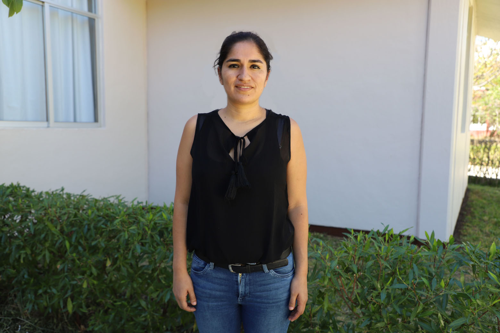
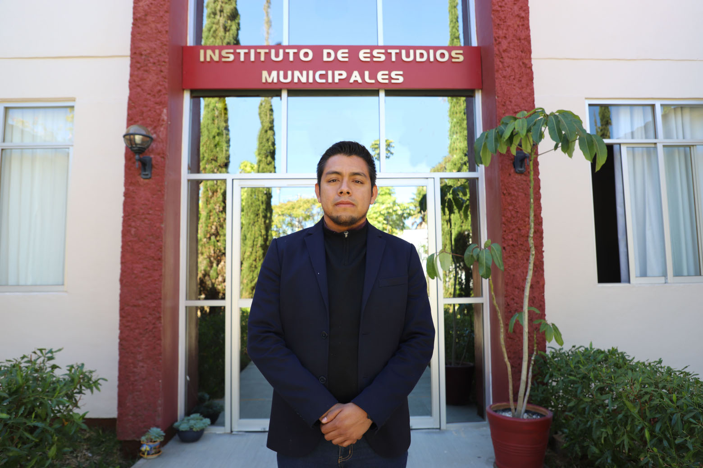

Pedro Duran Ferman

Director del instituto
Grado academico
Doctorado en Problemas
Económico-Agroindustriales
Maestría en Economía con especialidad
en Economía Internacional
Maestría en Administración Ingeniería en Agronomía con especialiadad en Economía Agrícola
: pduran@unsis.edu.mx
Línea de Investigación actual
“Conflicto Electoral, actores colectivos y régimen de Sistemas Normativos Internos en tres municipios de la Sierra Sur de Oaxaca”. Artículos y Ensayos de Sociología Rural. Año 10, Número 10, Julio-Diciembre 2015. Universidad Autónoma Chapingo -Departamento de Sociología Rural Artículos en revista indexada “Elecciones por Sistemas Normativos Internos y conflicto electoral en la Sierra Sur de Oaxaca: derechos políticos Vs. Autodeterminación”.
Horacio Gonzalez Perez

Grado academico
Doctorado en Ciencias en Economía Agrícola
Maestría en Ciencias en Economía Agrícola y de los Recursos Naturales
Licenciatura en Economía Agrícola
Líneas de Investigación Actuale
: horacio.gonzalez@unsis.edu.mx
Línea de Investigación actual
Planeación prospectiva-tecnológica para el desarrollo
Valoración económica ambiental para la planeación
Planeación y ordenamiento territorial
Estadística y econometría en la planeación estratégica
Aurea Arellano Cruz

Grado academico
Doctora en Estudios Fiscales con Orientación en Hacienda Pública
Maestría
en Fiscal
Licenciatura en Derecho
: aarellano@unsis.edu.mx
Línea de Investigación actual
Democracia y gobierno en la sociedad de la información. Sublìneas: fiscalización superior,
transparencia y rendición de cuentas
Roberto Garcia Zuniga

Director del instituto
Grado academico
Doctorado en Ciencias en Planeación de Empresas y Desarrollo Regional
Maestría en Ciencias en Planificación del Desarrollo Regional
Ingeniería Industrial Química
: rgarcia@unsis.edu.mx
Línea de Investigación actual
Estudios urbano-regionales
Felicitas Ortiz Garcia
Director del instituto
Grado academico
Doctorado en Administración de Negocios
Maestría en Administración de Empresas
Licenciatura en Contabilidad Pública
: fortiz@unsis.edu.mx
Línea de Investigación actual
Tecnología y entorno de la empresa
Espíritu emprendedor
Desarrollo organizacional en las empresas familiares y no familiares
Mauricio Sosa Montes

Director del instituto
Grado academico
Doctorado en Ciencias de Estudios del Desarrollo Rural
Maestría en Ciencias en Economía
Ingeniería en Agronomía
: msosa@unsis.edu.mx
Línea de Investigación actual
Desarrollo regional y medio ambiente
Estudios del desarrollo rural
Economía campesina y desarrollo sostenible o sustentable
Reyna Minerva Hernandez V

Grado academico
Doctorado en Ciencias en Planificación de Empresas y Desarrollo Regional
Maestría en Ciencias en Planificación de Empresas y Desarrollo Regional
Licenciatura en Administración
: rhernandez@unsis.edu.mx
Línea de Investigación actual
Estudios empresariales desarrollo y competitividad
Luz Maria Garcia Garcia
Grado academico
Doctorado en Gobierno Electrónico
Maestría en Desarrollo Regional
Licenciatura en Ciencias Políticas y Administración Pública
: lgarcia@unsis.edu.mx
Línea de Investigación actual
Gobierno electrónico
Migración y gobierno electrónico
Brecha digital
Migración internaciona
Ramon Inzunza Acosta

Grado academico
Doctorado en Ciencias Económicas
Licenciatura en Contaduría y Finanzas
: rinzunza@unsis.edu.mx
Línea de Investigación actual
Desarrollo y sostenibilidad ambiental
Estrategias de competitividad
Omar Avila Florea

PROFESOR - INVESTIGADOR
Grado academico
Doctor en Urbanismo
Maestría en Estudios de Población
Licenciatura en Geografía y Ordenación del Territorio
: afomar@unsis.edu.mx
Línea de Investigación actual
Desarrollo urbano en ciudades
Zonas metropolitanas
Megalópolis
Viviend
José Ruider Lopez Hernandez

PROFESOR - INVESTIGADOR
Grado academico
Posdoctorado en Estudios Regionales
Doctorado en Ciencias en Ecología y Desarrollo Sustentable
Maestría en Ciencias en Desarrollo Rural Regional
Especialidad en Sociología Rural
Ingeniería Agronomía
: jrlopez@unsis.edu.mx
Línea de Investigación actual
Gobernanza ambiental y ecoturismo
Participación social y problemática socioambiental
Gestión del desarrollo regional y local
Emanuel Lorenzo Ramirez Arellanes

PROFESOR-INVESTIGADOR
Grado academico
Maestría en Planeación Estratégica Municipal
Licenciatura en Administración Municipal
: eramirez@unsis.edu.mx
Línea de Investigación actual
Planeación estratégica municipal
Desarrollo municipal: social, económico e institucional
Gestión municipal: procesos e indicadores
Aurelia Gomez Gomez

Grado academico
Maestría en en Administración
Licenciatura en Administración
: agomez@unsis.edu.mx
Línea de Investigación actual
Administración organizacional
Ventas y mercadotecnia
Marco Antonio Santos Martínez

Grado academico
Maestría en Ciencias en Planificación de Empresas y Desarrollo Regional
• Licenciatura en Ciencias Empresariales
: msantos@unsis.edu.mx
Línea de Investigación actual
Estrategias competitivas
Elsa Apolonia Mendoza Cortes

Grado academico
Maestría en Ciencias en Planificación de Empresas y Desarrollo Regional
• Licenciatura en Administración
: emendoza@unsis.edu.mx
Línea de Investigación actual
Desarrollo regional sustentable
Hadya Concepción Díaz Ortiz

PROFESORA - INVESTIGADORA
Grado academico
Maestría en Ingeniería Administrativa y Calidad
• Licenciatura en Ciencias Empresariales
: hdiaz@unsis.edu.mx
Línea de Investigación actual
Calidad en el servicio en las Mipymes • Innovación y competitividad empresarial
Máximo Jorge Saavedra Garcia

PROFESOR - INVESTIGADOR
Grado academico
Maestría en Finanzas
• Licenciatura en Administración
: jsaavedra@unsis.edu.mx
Línea de Investigación actual
Finanzas corporativas en México
• Sistema financiero
• Finanzas personales
Diego Toto Jiménez

PROFESOR - INVESTIGADOR
Grado academico
Maestría en Análisis Político
• Licenciatura en Sociología
: dtoto@unsis.edu.mx
Línea de Investigación actual
Cambio político, democracia, partidos políticos y elecciones
Jorge Lamas Carlos

PROFESOR - INVESTIGADOR
Grado academico
Maestría en Economía • Licenciatura en Física y Matemáticas
: jlamas@unsis.edu.mx
Línea de Investigación actual
Modelación económica
• Economía pública
• Diagnóstico y evaluación de programas federales a municipios
• Análisis de mercados energéticos
Benito Güizado Hernandez

PROFESOR - INVESTIGADOR
Grado academico
Maestría en Economía
• Licenciatura en Derecho
Línea de Investigación actual
Política económica y servicios públicos
Araceli Luz A. Rodriguez Martinez

PROFESOR - INVESTIGADOR
Grado academico
Maestría en Finanzas
• Licenciatura en Economía
: arodriguez@unsis.edu.mx
Línea de Investigación actual
Finanzas empresariales
Enrique Martínez Sanchez

PROFESOR - INVESTIGADOR
Grado academico
Maestría en Administración con especialidad en Proyectos de Inversión
• Maestría en Administración y Políticas Públicas
• Ingeniería Química Industrial
: emartinez@unsis.edu.mx
Línea de Investigación actual
Sin lineas de Investigación activas
Epifania Sanchez Hernandez

PROFESORA - INVESTIGADORA
Grado academico
Maestría en Administración
• Licenciatura en Contabilidad Pública
: esanchez@unsis.edu.mx
Línea de Investigación actual
Gestión y desarrollo municipal
• Gobierno y desarrollo institucional
Juan Carlos Mata Espinoza

PROFESOR - INVESTIGADOR
Grado academico
Maestría en Políticas Públicas
• Licenciatura en Política y Gestión Social
: jmata@unsis.edu.mx
Línea de Investigación actual
Teoría y práctica de las políticas públicas
• Diseño, implementación y evaluación de las políticas públicas
Lizeth Daniza Gomez Hernandez

Grado academico
Maestría en Ciencias en Desarrollo Regional y Tecnológico
• Licenciatura en Administración
: lgomez@unsis.edu.mx
Línea de Investigación actual
Planeación Estratégica
• Competitividad
• Ecoturismo
• Desarrollo
Gloria Stella Ramirez Ospitia

Grado academico
Maestría en Geografía con énfasis en Ordenamiento Territorial
• Especialidad en Sistemas de Información Geográfica
• Especialidad en Ingeniería Agrícola
• Ingeniería Agronómica
: gramirez@unsis.edu.mx
Línea de Investigación actual
Planeación y Gestión del Desarrollo
• Gobierno, Administración y Finanzas Públicas
Víctor Santiago Sarmiento

Grado academico
Maestría en Ciencias en Desarrollo Regional y Tecnológico
• Licenciatura en Administración
vsantiago@unsis.edu.mx
Línea de Investigación actual
Estrategias de competitividad
• Desarrollo y sostenibilidad ambiental
Mariano Olvera Ramirez

JEFE DE CARRERA DE LA LICENCIATURA EN CIENCIAS EMPRESARIALES
Grado academico
Maestría en Estudios Organizacionales
• Especialidad en Migración Internacional
• Licenciatura en Comercio Internacional
Licenciatura en Administración
Línea de Investigación actual
Organizaciones de migrantes transnacionales • Análisis organizacional • La vida simbólica en las organizaciones • Modernidad y diversidad organizacional • Intervención organizacional • Perspectivas teórico metodológicas de la planeación estratégica del desarrollo
Rosario Maya Lucas

JEFA DE CARRERA DE LA LICENCIATURA EN ADMINISTRACIÓN MUNICIPAL
Grado academico
Maestría en Ciencias Sociales con especialidad en Desarrollo Municipal
• Licenciatura en Administración Municipal
: municipal@unsis.edu.mx | rosario.maya@unsis.edu.mx
Línea de Investigación actual
Gobierno y desarrollo institucional
• Gestión y desarrollo municipal
• Elecciones por sistemas normativos internos en Oaxaca
Rócio Guadalupe Bravo Salazar

Grado academico
Maestría en Ciencias Políticas
• Licenciatura en Ciencia Política y Relaciones Internacionales
: rocio.bravo@unsis.edu.mx
Línea de Investigación actual
Participación política en comunidades regidas por sistemas normativos internos
• Desarrollo humano y sustentable en comunidades indígenas
• Capacidades institucionales de Municipios regidos por derecho consuetudinario
Joann Etienne Olivier Picard

Grado academico
Maestría en Ciencias Políticas (Diplom-Politologe)
• Licenciatura en Ciencias Políticas
: Joann.Picard@unsis.edu.mx
Línea de Investigación actual
Conflictos centro-periferia, formas de vida post desarrollistas, gobernanza en condiciones de estado limitado
Fabiola Crespo Barrios

Grado academico
Maestra en Ingeniería
• Licenciatura en Ciencias Empresariales
: f.crespo@unsis.edu.mx
Línea de Investigación actual
Empresas y desarrollo regional
Nina MArtinez Cruz
Grado academico
Maestría en Ciencias Sociales con especialidad en Desarrollo Municipal
• Licenciatura en Administración Pública
: nina.martinez@unsis.edu.mx | publica@unsis.edu.mx
Línea de Investigación actual
Participación y sistemas normativos internos
• Transparencia, rendición de cuentas y contraloría social
• Cohesión social
• Finanzas públicas
Oscar Jesse Rojas Ortiz

Grado academico
Maestría en Derecho Internacional Penal
• Licenciado en Relaciones Internacionales
: jesse.rojas@unsis.edu.mx
Línea de Investigación actual
Derechos humanos
• Derecho internacional público y privado
• Derecho municipal
Abisai Aragón Cruz

JEFE DE CARRERA DE LA LICENCIATURA EN ADMINISTRACIÓN PÚBLICA
Grado academico
Maestría en Estudios de la Mujer
• Licenciatura en Administración Pública
: abisai.aragon@unsis.edu.mx
Línea de Investigación actual
Gestión hídrica
• Gobernanza ambiental
Alicia Martinez Cruz

Grado academico
Maestría en Estudios de la Mujer
• Licenciatura en Administración Pública
: alicia.martinez@unsis.edu.mx | publica@unsis.edu.mx
Línea de Investigación actual
Sistemas normativos internos, participación política y género
• Políticas públicas con perspectiva de género
• Interculturalidad, ciudadanía, identidad y derechos humanos
Zayra Trujillo Baez

Grado academico
Licenciatura en Contaduría
: zbaez@unsis.edu.mx
Línea de Investigación actual
Estudios empresariales
Eleazar Brena Garcia

Grado academico
Ingeniería en Agrónomía
: ebrena@unsis.edu.mx
Línea de Investigación actual
Sin Investigaciones activas